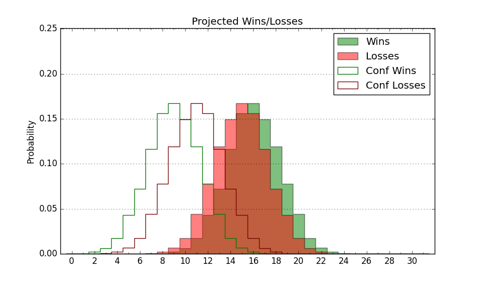

| Home | Game Probabilities | Conferences | Preseason Predictions | Odds Charts | NCAA Tournament |
| City: | Indianapolis, Indiana | |
| Conference: | Big East (8th)
| |
| Record: | 0-2 (Conf) 7-6 (Overall) | |
| Ratings: | Comp.: 14.5 (64th) Net: 15.3 (61st) Off: 114.9 (52nd) Def: 99.6 (88th) SoR: 7.9 (92nd) |
| Remaining | ||||||
|---|---|---|---|---|---|---|
| Date | Opponent | Win Prob | Pred. | |||
| 1/1 | Villanova (62) | 64.1% | W 78-74 | |||
| 1/4 | @ St. John's (30) | 20.9% | L 71-81 | |||
| 1/8 | @ Providence (67) | 37.3% | L 66-70 | |||
| 1/11 | Creighton (53) | 60.1% | W 76-73 | |||
| 1/15 | Seton Hall (140) | 87.5% | W 70-57 | |||
| 1/21 | @ Connecticut (10) | 12.4% | L 67-80 | |||
| 1/25 | DePaul (83) | 73.5% | W 77-70 | |||
| 1/28 | Marquette (16) | 35.7% | L 73-77 | |||
| 1/31 | @ Georgetown (89) | 46.4% | L 72-73 | |||
| 2/5 | @ Seton Hall (140) | 67.2% | W 66-61 | |||
| 2/8 | Providence (67) | 67.0% | W 70-66 | |||
| 2/15 | Georgetown (89) | 74.7% | W 76-68 | |||
| 2/18 | @ Xavier (59) | 33.5% | L 73-78 | |||
| 2/22 | @ DePaul (83) | 44.9% | L 73-74 | |||
| 2/26 | St. John's (30) | 47.4% | L 76-77 | |||
| 3/1 | @ Villanova (62) | 34.4% | L 74-78 | |||
| 3/5 | Xavier (59) | 63.2% | W 78-74 | |||
| 3/8 | @ Creighton (53) | 30.6% | L 72-78 | |||
| Previous | Game Score | |||||
| Date | Opponent | Win Prob | Result | Off | Def | Net |
| 11/4 | Missouri St. (163) | 89.5% | W 72-65 | -11.7 | 4.4 | -7.3 |
| 11/8 | Austin Peay (299) | 96.3% | L 66-68 | -16.7 | -18.0 | -34.8 |
| 11/11 | Western Michigan (270) | 95.3% | W 85-65 | -0.0 | 0.8 | 0.8 |
| 11/15 | SMU (32) | 49.8% | W 81-70 | -1.9 | 9.0 | 7.1 |
| 11/22 | Merrimack (192) | 91.5% | W 78-39 | 8.7 | 26.9 | 35.6 |
| 11/28 | (N) Northwestern (47) | 40.7% | W 71-69 | 4.5 | 1.6 | 6.1 |
| 11/29 | (N) Mississippi St. (23) | 28.0% | W 87-77 | 18.4 | 8.8 | 27.2 |
| 12/3 | Eastern Illinois (324) | 97.3% | W 73-58 | -8.3 | 3.9 | -4.4 |
| 12/7 | @Houston (4) | 6.3% | L 51-79 | -5.8 | -13.1 | -18.9 |
| 12/10 | North Dakota St. (108) | 81.5% | L 68-71 | -6.5 | -12.4 | -18.9 |
| 12/14 | (N) Wisconsin (40) | 37.8% | L 74-83 | 2.0 | -7.2 | -5.2 |
| 12/18 | @Marquette (16) | 14.0% | L 70-80 | 10.3 | -10.4 | -0.0 |
| 12/21 | Connecticut (10) | 32.6% | L 74-78 | 0.9 | 1.7 | 2.6 |
| Stats & Trends | |||||
|---|---|---|---|---|---|
| Current | Day | Week | Month | Season | |
| Composite | 14.5 | +0.0 | +1.2 | +4.4 | +3.8 |
| Comp Rank | 64 | -1 | -- | +14 | +16 |
| Net Efficiency | 15.3 | +0.0 | +1.3 | +6.6 | -- |
| Net Rank | 61 | -- | +7 | +47 | -- |
| Off Efficiency | 114.9 | +0.1 | +1.4 | +6.7 | -- |
| Off Rank | 52 | -- | +9 | +70 | -- |
| Def Efficiency | 99.6 | -0.0 | -0.1 | -0.1 | -- |
| Def Rank | 88 | -- | +3 | +26 | -- |
| SoS Rank | 41 | -2 | +64 | +251 | -- |
| Exp. Wins | 16.0 | +0.0 | -0.1 | +1.3 | +1.2 |
| Exp. Conf Wins | 9.0 | +0.0 | -0.1 | +0.8 | +1.0 |
| Conf Champ Prob | 0.5 | +0.0 | -0.5 | -0.2 | -0.8 |

| Advanced Stats | ||
|---|---|---|
| Stat | Value | Rank |
| Off Eff FG % | 0.558 | 55 |
| Off Ast Ratio | 0.165 | 74 |
| Off ORB% | 0.280 | 199 |
| Off TO Rate | 0.148 | 151 |
| Off FT Ratio | 0.490 | 4 |
| Def Eff FG % | 0.437 | 21 |
| Def Ast Ratio | 0.121 | 50 |
| Def ORB% | 0.274 | 145 |
| Def TO Rate | 0.105 | 355 |
| Def FT Ratio | 0.239 | 13 |